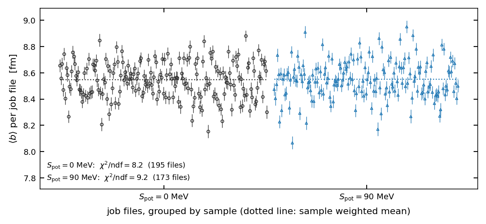
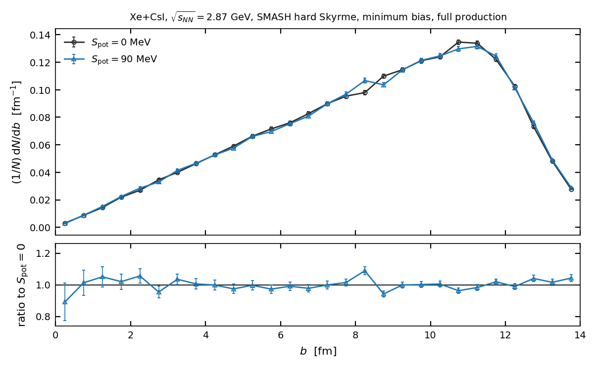
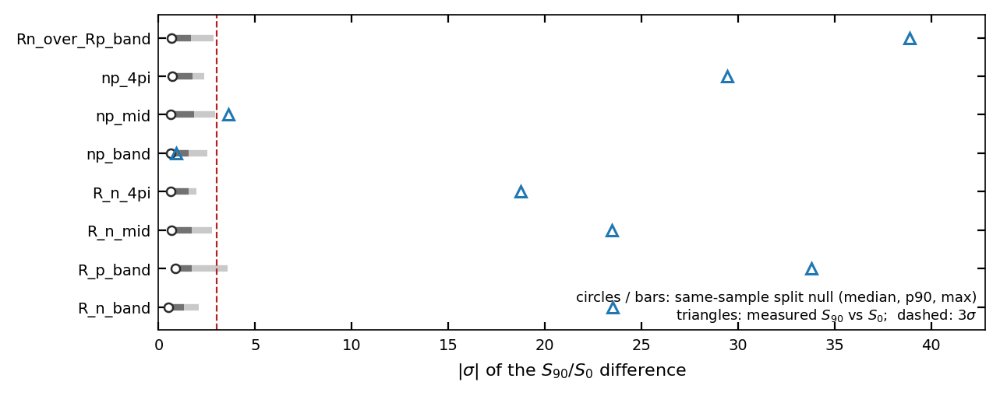
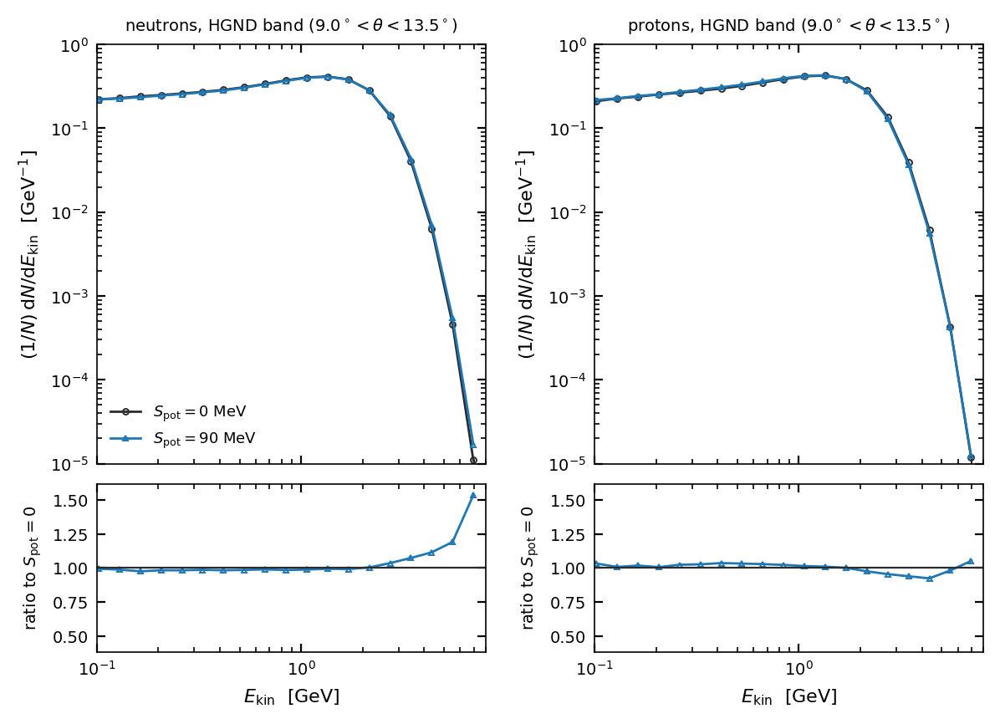

BM@N · High-Granularity Neutron Detector · feasibility
The symmetry-potential signal is real; the centrality artefact was not
Full-production impact-parameter analysis of the SMASH Xe+CsI samples. The three productions do share a b distribution, so the effect previously withdrawn as a sampling artefact survives — and it appears as an isovector tilt of the nucleon spectra, opposite in sign for neutrons and protons.
What changed
- Withdrawn: “the productions do not share a b distribution.” At full statistics ⟨b⟩ differs by +0.0034 ± 0.0147 fm — 0.23σ, against the −0.255 fm claimed from the 1 % subset.
- Withdrawn: the conclusion that the spectral-hardness signal was manufactured by centrality. It was not; there was no mismatch of consequence to manufacture it.
- Established: neutron and proton spectra in the HGND band tilt in opposite directions with Spot. The double ratio Rn/Rp moves +10.7 %, at 43× the method’s measured noise floor, in 10 of 10 centrality classes.
- Established: b carries job-file block structure (χ²/ndf = 8.15, 194 dof). Per-event errors understate every b-dependent uncertainty by 2.85×; that single mistake produced the artefact.
- Pending: the 18 MeV production is still reducing, so there is no monotonicity check and no response-shape fit. No EOS parameter is extracted here.
1 Why the earlier answer was wrong
The previous feasibility study compared four byte-limited CSV extracts per production and found the samples differed in impact parameter: ⟨b⟩ = 8.705 / 8.632 / 8.450 fm, KS p = 1.5 × 10−12 for the 90 MeV sample. Because spectral hardness varies by a factor ~4 across centrality, a per-cent-level offset in ⟨b⟩ is enough to manufacture the whole apparent Spot effect. That reasoning was sound. The input was not, for two independent reasons.
The extracts were biased by their own truncation
Each extract was cut at 80 MiB, about the first half of a ~4 130-event job file. Because
b is serially correlated within a file — one file drifts
0.8 fm between its halves, Spearman ρ = −0.14, p = 3.5 × 10−11
— a fixed byte cut is not a neutral sample of its own file. Reducing the
complete first four zeroSpot files gives ⟨b⟩ = 8.589 fm
against 8.705 fm truncated, KS p = 6.6 × 10−6.
Events in a job file are not independent in b
Within one production, where no Spot difference can exist, job-file means of
b scatter far beyond their statistical errors: χ²/ndf = 8.15
over 194 degrees of freedom (p = 6.7 × 10−216) for
zeroSpot and 9.19 for bigSpot. The file means have an rms of
0.137 fm against a mean per-file error of 0.048 fm. The correct unit of resampling is
therefore the job file, not the event — the same class of mistake as per-particle
versus event-level errors, one level further out.

scripts/plot_b_full.py,
results/b_full_analysis/fig2_job_structure.pdf.2 At full statistics the distributions agree
The reduction streamed the complete production — 195 and 173 job files, 804 369 and 717 286 events, matching the documented counts exactly, with no failed members and no rows outside the histogram axes.
| quantity | Spot = 0 | Spot = 90 | difference | significance |
|---|---|---|---|---|
| job files | 195 | 173 | — | — |
| events | 804 369 | 717 286 | — | — |
| ⟨b⟩ [fm] | 8.5454 | 8.5488 | +0.0034 ± 0.0147 | 0.23σ |
| (per-event errors) | ±0.0050 | 0.68σ | ||
| KS D | 0.0038 | subset gave 0.0562 | — | |
| ratio vs unity | χ²/ndf = 1.57 | 28 bins, job-level | p = 0.029 | |
| (per-event errors) | χ²/ndf = 13.57 | bars 2.95× smaller | p = 2×10−63 | |
The last two rows are the whole story of the earlier error. With per-event errors the two b distributions look irreconcilable; with job-level errors they are consistent to within a mild residual that reweighting then removes.

fig1_b_distributions.pdf.3 Reweighting, and two tests of it
Rather than rely on the agreement above, every comparison is made after forcing the samples onto a common b density. Each event carries a weight w = fref(b)/fsample(b) in 0.1 fm bins, with fref the mean of the samples’ own densities; centrality classes use ten 10 % bins with edges from the pooled quantiles, with the reweighting reapplied inside each class. Because the distributions already agree, the correction is nearly free: effective statistics fall by 0.1 %, no event is discarded, and the spread in ⟨b⟩ between samples falls from 0.00171 to 0.00009 fm.
Reweighting is not the same as percentile matching or common-b stratification. Equal percentiles select unequal b when the underlying distributions differ, and stratification leaves a residual whenever the observable varies inside a bin. The correction here is applied event by event.
The null test: does the method invent a signal?
Splitting one production’s own job files into two pseudo-samples and running the
identical pipeline must find nothing, because both halves share Spot. Over 60
random splits of zeroSpot the median |σ| is 0.52–0.86 where a
calibrated procedure gives ~0.7, and 3σ is reached in 0–1.7 % of splits.
bigSpot behaves the same way. The median same-sample difference is the
noise floor: 0.13 % for Rn, 0.22 % for Rp, 0.25 %
for the double ratio.
The injection test: does the method remove a real bias?
Applying an acceptance exp(−0.15 b) to one half shifts ⟨b⟩ by −1.56 fm, roughly six times the offset once claimed between productions.
| observable | uncorrected | σ | reweighted | σ |
|---|---|---|---|---|
| R_n_4pi | −16.69 % | 61.0 | +0.03 % | 1.07 |
| np_4pi | −2.45 % | 53.7 | +0.02 % | 1.07 |
| R_n_mid | +12.62 % | 18.4 | +0.20 % | 0.44 |
| R_n_band | +2.20 % | 6.2 | +0.14 % | 0.42 |
| Rn_over_Rp_band | +1.60 % | 3.5 | +0.46 % | 0.92 |
Uncorrected, the injected bias manufactures up to 61σ. After reweighting every observable returns to ≤1.1σ and ≤0.5 %, and the two halves’ ⟨b⟩ agree to four decimals. Note also that the double ratio is the least disturbed quantity in the set even before correction — it is intrinsically centrality-robust, which is why it is the headline below.

zeroSpot;
triangles give the measured Spot = 90 versus 0 significance; the dashed line
is 3σ. Result: the null sits below 3σ almost everywhere while the
measured hardness observables sit at 19–39σ, far off the scale of the null.
Provenance: fig5_null_calibration.pdf, 60 splits × 300 bootstrap
resamples.4 The result: an isovector tilt
With centrality matched and errors resampled at the job level, the spectral-hardness ratio R = N(Ekin > 2 GeV)/N(Ekin < 1 GeV) responds strongly to the symmetry potential — and responds with opposite sign for neutrons and protons.
| observable | Spot = 0 | Spot = 90 | relative | σ | noise floor |
|---|---|---|---|---|---|
| Rn_over_Rp_band | 1.00913 ± 0.00181 | 1.11727 ± 0.00179 | +10.72 % | 38.9 | 0.25 % |
| R_p_band | 0.68111 ± 0.00090 | 0.64139 ± 0.00088 | −5.83 % | 33.8 | 0.22 % |
| R_n_mid | 0.02074 ± 0.00005 | 0.02210 ± 0.00005 | +6.54 % | 23.5 | 0.25 % |
| R_n_band | 0.68733 ± 0.00094 | 0.71661 ± 0.00094 | +4.26 % | 23.5 | 0.13 % |
| np_4pi | 1.29165 ± 0.00017 | 1.29512 ± 0.00017 | +0.27 % | 29.4 | 0.01 % |
| R_n_4pi | 0.62809 ± 0.00052 | 0.62976 ± 0.00052 | +0.27 % | 18.8 | 0.01 % |
| np_mid | 1.14426 ± 0.00037 | 1.14251 ± 0.00032 | −0.15 % | 3.6 | 0.04 % |
| np_band | 1.17596 ± 0.00083 | 1.17493 ± 0.00078 | −0.09 % | 0.9 | 0.08 % |
Two things in that table deserve emphasis. First, n/p in the HGND band is null (0.9σ) while the hardness of each species moves by several per cent. The ratio of yields is not the sensitive observable; the shape of the spectrum is. This supports the earlier decision to decline primary-nucleon n/p, and relocates the sensitivity to R. Second, at Spot = 0 the double ratio is 1.009 — neutrons and protons are equally hard, as they should be with no symmetry potential — and the potential drives it to 1.117.

fig6_hgnd_band_spectra.pdf.
fig4_Rn_over_Rp_band_centrality.pdf.The single-species neutron hardness — the quantity HGND can actually measure — is strongest in central collisions, as a density-dependent potential should be: +7.3 % (18.8σ) in 0–10 %, falling to +2.3 % by mid-centrality, and exceeding 3σ in 6 of 10 classes. The double ratio is flatter because it also divides out the common centrality trend.
5 What this does and does not establish
The 18 MeV production is still reducing. Everything above is the 0 versus 90 MeV contrast. Without the intermediate point there is no monotonicity check, no response-shape fit, and therefore no extraction of any EOS parameter — not L, not S0. A two-point comparison establishes sensitivity, not a measurement.
These are MC-truth primary nucleons. No detector response, no reconstruction efficiency, no GNN. The HGND band is an angular selection on truth momenta, and the measured quantity would be a reconstructed neutron energy with finite resolution, which will dilute a spectral-shape effect.
HGND measures neutrons, not protons. Charged protons bend in the BM@N field and do not reach the detector with the kinematics assumed here, so Rp in the “HGND band” is a truth-level angular selection rather than an HGND measurement. Building the double ratio experimentally requires the proton arm from BM@N tracking, over a different acceptance with different systematics. The directly HGND-relevant result is the single-species Rn: +4.26 %, 23.5σ, 33× the noise floor.
Residual and definitional caveats. The b ratio retains a mild shape tension (χ²/ndf = 1.57, p = 0.029) that reweighting removes but which should be watched when the third sample lands. Generator weights are absent and unit weighting is undocumented. The free/emitted-nucleon definition that separates this export from the reference calculation is unchanged and still unresolved.
Superseded numbers. The 29.3σ / 9.9σ / 6.4σ hardness figures from the pre-centrality report used per-event errors and no matching, and the subsequent retraction of those figures as a b artefact was itself based on the biased subset. Both are replaced by the table in §4. The centrality-feasibility conclusion that “no observable reaches 3σ when matched in b” is withdrawn: it was computed on 4 job files per sample, where the bootstrap cannot estimate its own error.
6 Reproduction
One command runs reduction, reweighting, both validation tests and every figure:
scripts/run_full_b_analysis.sh <events_dir> <results_dir> [n_boot]
The reduction streams the tarballs over the mounted volume, or reads the extracted CSVs
directly when DATA_ROOT points at them —
slurm/reduce_prim.ncx.sbatch runs it on ncx, where the data is local, and
returns ~40 MB per sample instead of moving 25 GB. A bootstrap replicate is evaluated as a
matrix product over a precomputed (file × b-bin × counter) tensor, so 400
replicates over 800 000 events take under a second.